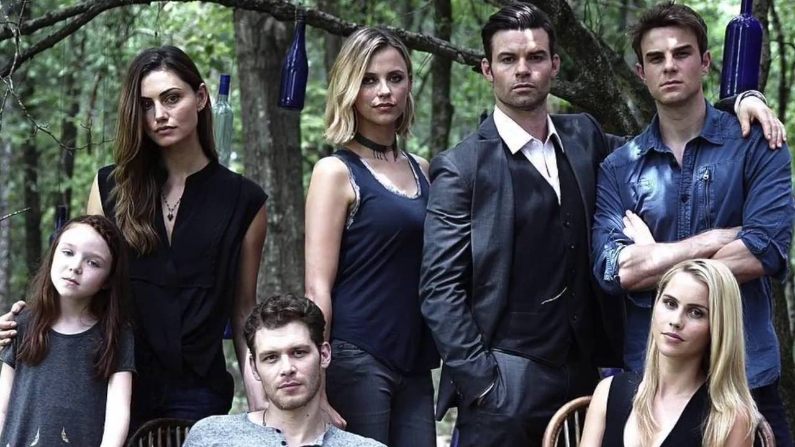

Nossas Aventuras

família Mikaelson
Essa femília tem um voto de "Sempre para sempre" eles se protegem e cuidam um do outro nao importa o que aconteça, a família sempre em primeiro lugar.

Pequena Hope
"Uma bebe íbrida"Hope Mikaelson é a personificação da força e do legado, carregando dentro de si o peso de ser a última das Tribridas, uma mistura de poder, dor e esperança para aqueles que a amam.""
Klaus, Elijah e Marcel
"Klaus, Elijah e Marcel, três almas entrelaçadas pelo sangue e pela lealdade, onde a vingança, o amor e o poder se misturam, criando uma aliança inquebrável, mas também marcada por traições e sacrifícios. O que os une é o que os destrói."